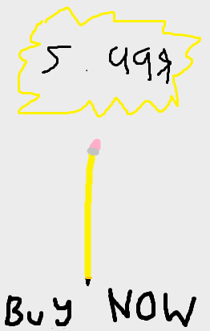

| Website |
Used for? |
Citation |
| Wikipedia - https://en.wikipedia.org/wiki/North_Vancouver_(city) |
Description of North Vancouver on Home Page |
Wikimedia Foundation. (2023, June 11). North Vancouver (city). Wikipedia. https://en.wikipedia.org/wiki/North_Vancouver_(city) |
| District of North Vancouver - https://www.dnv.org/programs-and-services/lynn-valley |
Description of Lynn Valley Page |
Lynn Valley. District of North Vancouver. (n.d.). https://www.dnv.org/programs-and-services/lynn-valley |
| Vancouver's North Shore - https://www.vancouversnorthshore.com/attractions/lonsdale-quay-market/ |
Description of Lonsdale Quay Page |
The Quay Market and Food Hall. Vancouver’s North Shore. (2022, August 30). https://www.vancouversnorthshore.com/attractions/lonsdale-quay-market/ |

 North Vancouver
North Vancouver